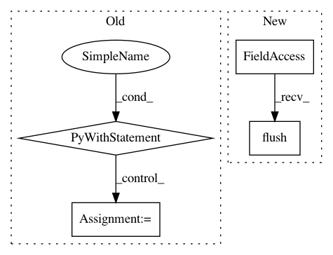

add588d68888e8ba869ffce17d214c48e41ca019,official/utils/logs/logger.py,BenchmarkFileLogger,log_metric,#BenchmarkFileLogger#Any#Any#Any#Any#Any#,166
Before Change
metric = _process_metric_to_json(name, value, unit, global_step, extras)
if metric:
with tf.gfile.GFile(
os.path.join(self._logging_dir, METRIC_LOG_FILE_NAME), "a") as f:
try:
json.dump(metric, f)
f.write("\n")
except (TypeError, ValueError) as e:
tf.logging.warning("Failed to dump metric to log file: "
"name %s, value %s, error %s", name, value, e)
def log_run_info(self, model_name, dataset_name, run_params, test_id=None):
Collect most of the TF runtime information for the local env.
The schema of the run info follows official/benchmark/datastore/schema.
After Change
try:
json.dump(metric, self._metric_file_handler)
self._metric_file_handler.write("\n")
self._metric_file_handler.flush()
except (TypeError, ValueError) as e:
tf.logging.warning("Failed to dump metric to log file: "
"name %s, value %s, error %s", name, value, e)
In pattern: SUPERPATTERN
Frequency: 3
Non-data size: 4
Instances
Project Name: tensorflow/models
Commit Name: add588d68888e8ba869ffce17d214c48e41ca019
Time: 2018-06-06
Author: scottzhu@google.com
File Name: official/utils/logs/logger.py
Class Name: BenchmarkFileLogger
Method Name: log_metric
Project Name: NVIDIA/sentiment-discovery
Commit Name: bfebb3f586ce9e7d6d14c45329ef651d48a01d03
Time: 2018-11-21
Author: raulp@nvidia.com
File Name: new_main.py
Class Name:
Method Name: main
Project Name: biotite-dev/biotite
Commit Name: d01dec159bcc199d45c0ea8a62e7ab71e854292e
Time: 2020-12-04
Author: tom.mueller@beachouse.de
File Name: src/biotite/application/viennarna/rnaplot/app.py
Class Name: RNAplotApp
Method Name: run